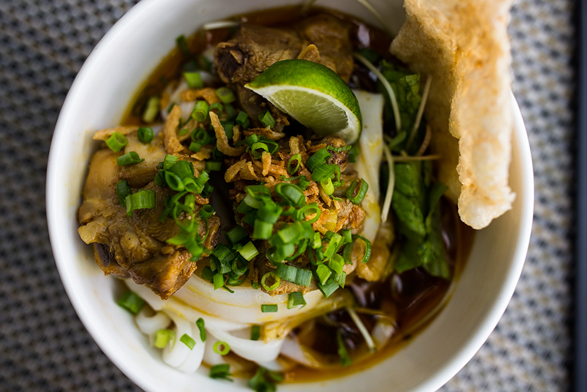

10 dishes must try in VietNam
Vietnamese food is known to be both healthy and robust in flavour, thanks its generous combination of fresh herbs and greens, paired with rice, noodles, seafood, pork and beef. While many cities such as Hanoi and Ho Chi Minh City offer plenty of fine-dining venues and five-star hotel restaurants decked out in extravagant settings, some of the best (and most authentic) Vietnamese delicacies are actually found at roadside eateries, vibrant street markets, and humble-looking restaurants.
1. Phở
Phở is the quintessential Vietnamese dish, the word phở referring to the type of noodle used in the recipe. Flat rice noodles dance around with medium-rare slivers of beef or boiled chicken in a hearty beef stock. The more popular of the two widely known varieties is phở Hanoi. Originally from the north, it is distinguished by a clear broth and dressed only with a squeeze of lemon and slices of bird’s eye chili. The southern iteration, phở Nam, has a murkier broth and is served with a bouquet of fresh herbs like bean sprouts, basil and mint.
The secret to a good bowl of phở lies in its stock. The broth is usually infused with fragrant star anise, clove and cinnamon to lend a natural sweetness to the mix. This dish is found on almost every street corner and is actually consumed for breakfast, unbeknownst to outsiders.
Try it: Pho Thin, 13 Lo Duc, Hai Ba Trung District in Hanoi or Pho Hoa, 260C Pasteur Street, District 3 in Ho Chi Minh City
2. Bánh Mì
Banh mi was first introduced to Vietnam during the French colonial period. It is a modification of the baguette, which was a staple food of the French in the 19th century. The baguette, paired with pork pâté, ham, cheese, and butter to serve only the French colonists at expensive restaurants and cafes, was still a luxury product to most Vietnamese.
When the locals learned how to make this food themselves, Banh mi became a common product, like other Western products such as condensed milk, coffee, and beer. The bakeries opened one after another in Saigon, some of which served the local class' need and became a hit, making Banh Mi the favorite breakfast to the Vietnamese until now.
Try it: Banh My Phuong, 2B Phan Chau Trinh, Hoi An
3. Cơm Tấm
Back in the day, Vietnamese farmers would eat the fractured rice grains they could not sell. Nowadays, “broken” rice is a food staple for the everyday working-class citizen. For a meal of humble origins, the preparations for cơm tấm can get very decadent.
While it's prepared in a number of ways, the most popular is cơm tấm sườn nướng ốp la. A fried egg is paired with caramelised grilled pork chop and laid out on a generous heap of broken rice. The dish is then slathered with nước chấm, a mixture of chilli, fish sauce and sugar, and a drizzle of green onion oil. The final touches include a side of shredded pickled carrots and daikon, slices of cucumbers and tomatoes, and crushed fried pork rinds and shallots for garnish.
Try it: A family-operated stall on 260 Vo Van Tan, District 3, Ho Chi Minh City
4. Bún Bò Huế
Representing the legendary royal cuisine of Hue, bún bò huế is a mighty demonstration of both beauty and taste. The alarmingly red broth is the first signal of its striking flavour—the result of hours spent simmering beef bones and stalks of lemongrass to produce a citrusy concoction. Flash boiled vegetables paired with tender beef shanks give this dynamic affair added vivacity. This may be a beef soup—the word bò is Vietnamese for beef—but don’t be surprised when you see sausage lurking in the bowl. Chả lụa is a sausage made of ham paste that has a texture reminiscent of tofu.
Try it: Bún Huế Hẻm,17 Hùng Vương, Phú Hội, Thành phố Huế, Thừa Thiên Huế
5.Mì Quảng
Part soup, part salad, mì quảng gracefully pulls off an identity crisis. That being said, don’t let the elegance of mì quảng fool you. This light and springy noodle dish from the Quang Nam province in Central Vietnam is street food. The vibrantly yellow noodles owe their rich colour to the turmeric-infused broth made rich with peanut oil. Only a ladleful is used in the making of this “soup”, which can be topped with anything from shrimp and chicken to pork belly and snakehead fish. Eat mì quảng with sliced banana flowers, Vietnamese coriander, basil and bánh tráng me, toasted sesame rice crackers.
Try it: Quan Mi Quang Ba Mua, 95 Nguyen Tri Phuong, Chinh Gian, Thanh Khe, Da Nang
6. Bánh Xèo

A Mekong Delta creation, bánh xèo is widely eaten around south and central Vietnam. Watching the crispy crepe being assembled is an audio-visual experience: the batter crackles loudly when it hits the hot pan—xèo meaning sizzling—and the edges gradually curl and golden as the skilled xèo maker deftly swirls the pan to evenly spread out the dense batter. The batter, traditionally made from rice flour and coconut milk, owes its yellowish hue to the addition of turmeric. Another French-inspired delight, the savoury pancake is filled with slices of boiled pork, minced pork, bean sprouts and shrimp and then folded in the manner of a crepe. A bánh xèo shouldn’t be too soggy and is best appreciated fresh off the skillet.
Try it: Pho Thin, 13 Lo Duc, Hai Ba Trung District in Hanoi or Pho Hoa, 260C Pasteur Street, District 3 in Ho Chi Minh City
7. Bún Chả
Bún chả became an overnight sensation after President Obama was pictured scarfing down a bowl of these grilled pork patties with Anthony Bourdain. But this speciality of the Old Quarter in Hanoi has always been popular among the locals. Around lunchtime, the scent of pork grilling over hot charcoal wafts down the sidewalks, filling the noses of hungry Hanoians.
This classic northern dish is comprised of cold bún (rice vermicelli); slices of seasoned pork belly; a mountain of fresh herbs and salad greens; and last but not least, medallions of minced pork swimming in a bowl brimming with a fish sauce-based broth. The go-to approach is to scoop small bundles of bún into your broth bowl and rotate between eating the noodles, the pork and the greens.
Try it:Bun Cha Huong Lien (also known as Bun Cha Obama), 24 Le Van Huu, Phan Dinh Ho, Hai Ba Trung, Hanoi
8. Xôi

Xôi, Vietnamese sticky rice is a departure from other sticky rice interpretations in the region. The weighted, more dense glutinous staple is comes in a savoury or a sweet option. Xôi mặn, savoury xôi, is a popular, inexpensive breakfast fix. Hankering for something sweeter? There are over 20 types of xôi ngọt; but if you’re hoping to mesmerised, you’re in luck. Xôi ngũ sắc, the five-coloured xôi, is a psychedelic swirl of purple, green, red, yellow, and white, pigmented using natural plant extracts.
Try it: Xoi Yen, 35B Nguyen Huu Huan, Ly Thai To, Hoan Kiem, Hanoi
9. Bánh bèo

More of an appetizer, bánh bèo is a quick fix from Hue in Central Vietnam. These steamed rice cakes come in bite-sized servings, akin to Vietnamese tapas. Each delicate, chewy disk is topped with a spoonful of creamy mung bean paste and toasted shrimps. The cakes are then trimmed with either croutons or the more indulgent tép mỡ—crunchy fried pork fat. At the centre of a good bánh bèo should be a dimple, signalling a well-steamed batch. This is paired nicely with nước chấm.
Try it: Quan Hanh, 11 Pho Duc Chinh (South Bank), Hue
10. Bánh Lọc
Bánh bột lọc is a transparent chewy dumpling made from tapioca flour and filled with minced pork and shrimp. The dumplings are then topped with fried shallots and served with sweet chili fish sauce. This is a specialty of Hue, the old imperial city in central Vietnam. My family originated from Hue so I grew up eating a lot of bánh bột lọc. This recipe is relatively easy but forming the dumpling does take some practice. The boiled dumplings are worth the effort, and making the dumplings is a fun activity to do as a group.
Try it: Chợ Đông Ba, 2 Trần Hưng Đạo, Phú Hoà, Thành phố Huế, Thừa Thiên Huế